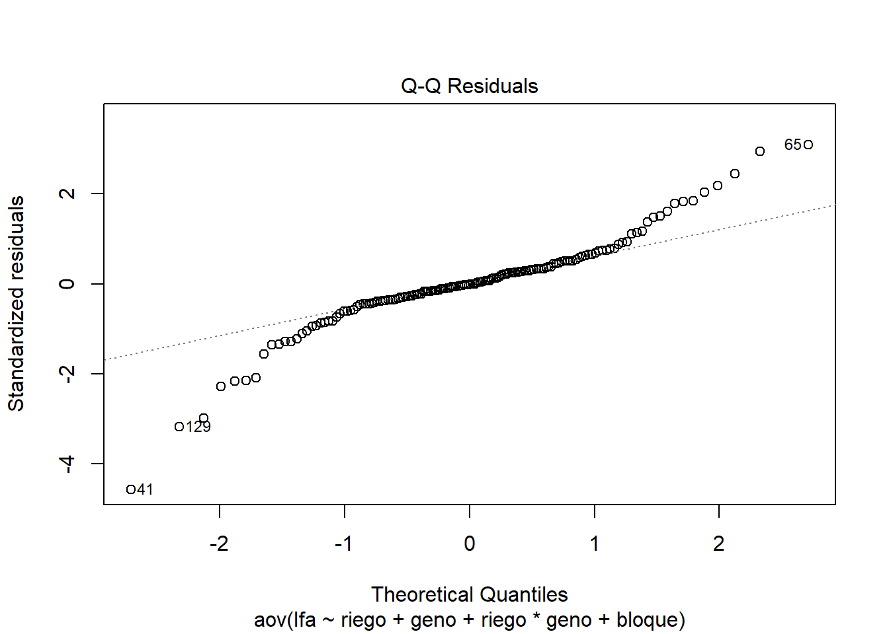
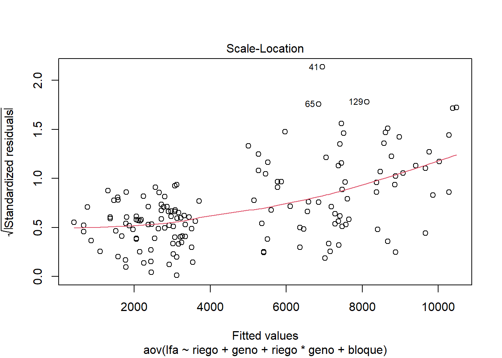

1 + 1[1] 2Quarto enables you to weave together content and executable code into a finished document. To learn more about Quarto see https://quarto.org.
When you click the Render button a document will be generated that includes both content and the output of embedded code. You can embed code like this:
1 + 1[1] 2You can add options to executable code like this
[1] 4The echo: false option disables the printing of code (only output is displayed).
DOSIS DE FERTILIZACIÓN NITROGENADA:
-0 -50 -100 -150
Rep: 5
# Instalar y cargar el paquete agricolae
library(agricolae)
fertilizacion <- c("T1", "T2", "T3", "T4")
repeticiones <- 5
# Crear el diseño completamente al azar (DCA)
diseño_dca <- design.crd(trt=fertilizacion, r=repeticiones, seed = 123)
# Mostrar la disposición del diseño experimental
print(diseño_dca$book) plots r fertilizacion
1 101 1 T2
2 102 1 T1
3 103 2 T1
4 104 2 T2
5 105 3 T1
6 106 4 T1
7 107 1 T4
8 108 1 T3
9 109 3 T2
10 110 2 T3
11 111 3 T3
12 112 4 T2
13 113 4 T3
14 114 2 T4
15 115 3 T4
16 116 5 T3
17 117 4 T4
18 118 5 T2
19 119 5 T1
20 120 5 T4Factor => Fertilizacion: 0, 50, 100, 150 Factor => Variedades de papa: canchan y peruanita bloques: 5
dosis <- c(0,50,100,150)
variedad <- c("canchan", "peruanita")
library(agricolae)
#factoral 4x2 con 5 bloques
trt<-c(4,2)
outdesign <-design.ab(trt, r=5)
str(outdesign)List of 2
$ parameters:List of 8
..$ design : chr "factorial"
..$ trt : chr [1:8] "1 1" "1 2" "2 1" "2 2" ...
..$ r : num 5
..$ serie : num 2
..$ seed : int -698361477
..$ kinds : chr "Super-Duper"
..$ : logi TRUE
..$ applied: chr "rcbd"
$ book :'data.frame': 40 obs. of 4 variables:
..$ plots: num [1:40] 101 102 103 104 105 106 107 108 109 110 ...
..$ block: Factor w/ 5 levels "1","2","3","4",..: 1 1 1 1 1 1 1 1 2 2 ...
..$ A : chr [1:40] "4" "1" "1" "4" ...
..$ B : chr [1:40] "1" "1" "2" "2" ...book<-outdesign$book
book plots block A B
1 101 1 4 1
2 102 1 1 1
3 103 1 1 2
4 104 1 4 2
5 105 1 3 1
6 106 1 2 1
7 107 1 2 2
8 108 1 3 2
9 109 2 1 1
10 110 2 1 2
11 111 2 2 1
12 112 2 2 2
13 113 2 3 2
14 114 2 3 1
15 115 2 4 1
16 116 2 4 2
17 117 3 4 2
18 118 3 1 1
19 119 3 3 1
20 120 3 3 2
21 121 3 2 2
22 122 3 1 2
23 123 3 2 1
24 124 3 4 1
25 125 4 3 1
26 126 4 1 1
27 127 4 4 2
28 128 4 2 1
29 129 4 2 2
30 130 4 3 2
31 131 4 4 1
32 132 4 1 2
33 133 5 3 2
34 134 5 2 1
35 135 5 2 2
36 136 5 1 2
37 137 5 4 2
38 138 5 4 1
39 139 5 1 1
40 140 5 3 1#importar datos
library(readxl)
fb2 <- read_excel("LA MOLINA 2014 POTATO WUE (FB) 2.xlsx",
sheet = "fb")
View(fb2)#estrutura de datos
str(fb2)tibble [150 × 18] (S3: tbl_df/tbl/data.frame)
$ riego : chr [1:150] "sequia" "sequia" "irrigado" "sequia" ...
$ geno : chr [1:150] "G01" "G02" "G01" "G02" ...
$ block : num [1:150] 2 4 3 1 2 5 1 4 2 1 ...
$ bloque : chr [1:150] "II" "IV" "III" "I" ...
$ spad_29: num [1:150] 56.3 52.7 49.2 55.5 58.2 43.5 57.4 56.1 61 60.3 ...
$ spad_83: num [1:150] 41.1 47.9 41.6 44.2 32.6 37.8 42.5 35.9 57.5 41.8 ...
$ rwc_84 : num [1:150] 61.5 63.2 67.7 64.9 74.5 ...
$ op_84 : num [1:150] -2.43 -3.03 -2.5 -2.4 -2.27 ...
$ leafdw : num [1:150] 13.28 9.42 18.22 8.84 14.55 ...
$ stemdw : num [1:150] 14.87 8.63 24.19 6.58 12.63 ...
$ rootdw : num [1:150] 3.83 2.1 3.16 2 1.83 2.83 2.28 3.65 4.04 4.17 ...
$ tubdw : num [1:150] 19.8 17.7 38 13.5 51.1 ...
$ biomdw : num [1:150] 51.8 37.8 83.6 30.9 80.2 ...
$ hi : num [1:150] 0.45 0.43 0.455 0.437 0.638 ...
$ ttrans : num [1:150] 4.5 3.54 8.39 2.9 7.37 ...
$ wue : num [1:150] 11.51 10.69 9.97 10.65 10.88 ...
$ twue : num [1:150] 4.4 4.99 4.53 4.65 6.94 ...
$ lfa : num [1:150] 2900 2619 7579 2450 5413 ...#modelo estadístico #y = u + riego + geno + riego x geno + bloque + error #en r, no se pone media ni error #ojo con block y bloque. block es numerico y bloque es caracter
modelo <- aov(formula = lfa ~ riego + geno + riego*geno + bloque, data = fb2)
anova(modelo)Analysis of Variance Table
Response: lfa
Df Sum Sq Mean Sq F value Pr(>F)
riego 1 788556926 788556926 1433.7957 <2e-16 ***
geno 14 261729564 18694969 33.9922 <2e-16 ***
bloque 4 3435339 858835 1.5616 0.1892
riego:geno 14 108147972 7724855 14.0457 <2e-16 ***
Residuals 116 63797516 549979
---
Signif. codes: 0 '***' 0.001 '**' 0.01 '*' 0.05 '.' 0.1 ' ' 1#supuestos del modelo
plot(modelo)



#comparación de medias
cm <- agricolae::duncan.test(y=modelo, trt =c("riego", "geno"), alpha=0.01, console=TRUE)
Study: modelo ~ c("riego", "geno")
Duncan's new multiple range test
for lfa
Mean Square Error: 549978.6
riego:geno, means
lfa std r se Min Max Q25 Q50
irrigado:G01 7377.892 583.61443 5 331.656 6539.86 7982.73 7038.08 7578.79
irrigado:G02 5779.562 1127.71742 5 331.656 4631.00 7392.38 5162.74 5233.55
irrigado:G03 5416.770 89.80871 5 331.656 5305.77 5545.69 5369.88 5412.51
irrigado:G04 9668.932 945.94448 5 331.656 8569.08 10811.84 8867.03 9791.10
irrigado:G05 8878.756 1235.57574 5 331.656 7205.94 10291.06 8189.67 8913.12
irrigado:G06 7455.364 1009.33982 5 331.656 6576.65 9040.06 6857.13 6938.90
irrigado:G07 1374.156 411.10652 5 331.656 1065.26 1989.25 1068.97 1140.05
irrigado:G08 7286.826 282.80318 5 331.656 6998.00 7643.80 7012.74 7310.01
irrigado:G09 10287.712 1548.81007 5 331.656 8533.54 12296.22 8924.78 10764.71
irrigado:G10 5271.344 822.34789 5 331.656 4249.18 6164.24 4743.16 5171.21
irrigado:G11 6854.880 1888.72290 5 331.656 3966.33 8867.09 6210.41 7225.02
irrigado:G12 7417.258 946.24681 5 331.656 6111.43 8603.78 7164.03 7194.26
irrigado:G13 8672.380 1015.60193 5 331.656 7180.79 9743.70 8256.98 8750.00
irrigado:G14 8384.132 1473.21710 5 331.656 6049.52 9776.01 7895.00 8978.89
irrigado:G15 6367.026 107.45072 5 331.656 6270.00 6522.46 6302.79 6304.88
sequia:G01 3039.588 115.85242 5 331.656 2900.00 3203.70 2994.58 2999.66
sequia:G02 2717.050 281.05239 5 331.656 2449.59 3063.35 2487.28 2618.85
sequia:G03 2059.052 179.44660 5 331.656 1811.97 2274.48 1953.50 2107.76
sequia:G04 2978.712 302.61678 5 331.656 2511.13 3263.70 2889.83 3010.27
sequia:G05 1783.678 120.66794 5 331.656 1657.64 1967.49 1700.00 1771.80
sequia:G06 3348.074 165.94367 5 331.656 3159.54 3550.19 3198.96 3381.68
sequia:G07 680.734 335.90739 5 331.656 216.31 1097.98 495.83 782.10
sequia:G08 2373.624 260.99914 5 331.656 2021.37 2697.93 2278.60 2319.71
sequia:G09 3073.322 198.12400 5 331.656 2781.32 3238.41 2961.78 3150.00
sequia:G10 2924.648 235.40497 5 331.656 2541.12 3136.07 2909.10 2940.95
sequia:G11 2062.412 317.51100 5 331.656 1556.38 2301.31 1942.23 2237.88
sequia:G12 2446.404 37.06811 5 331.656 2400.00 2487.78 2425.26 2438.98
sequia:G13 3126.100 47.70803 5 331.656 3062.34 3191.97 3110.00 3120.00
sequia:G14 3514.338 217.30731 5 331.656 3318.36 3811.99 3326.93 3449.76
sequia:G15 1580.506 248.79682 5 331.656 1176.63 1814.84 1560.00 1601.06
Q75
irrigado:G01 7750.00
irrigado:G02 6478.14
irrigado:G03 5450.00
irrigado:G04 10305.61
irrigado:G05 9793.99
irrigado:G06 7864.08
irrigado:G07 1607.25
irrigado:G08 7469.58
irrigado:G09 10919.31
irrigado:G10 6028.93
irrigado:G11 8005.55
irrigado:G12 8012.79
irrigado:G13 9430.43
irrigado:G14 9221.24
irrigado:G15 6435.00
sequia:G01 3100.00
sequia:G02 2966.18
sequia:G03 2147.55
sequia:G04 3218.63
sequia:G05 1821.46
sequia:G06 3450.00
sequia:G07 811.45
sequia:G08 2550.51
sequia:G09 3235.10
sequia:G10 3096.00
sequia:G11 2274.26
sequia:G12 2480.00
sequia:G13 3146.19
sequia:G14 3664.65
sequia:G15 1750.00
Alpha: 0.01 ; DF Error: 116
Critical Range
2 3 4 5 6 7 8 9
1228.339 1280.327 1315.569 1341.903 1362.739 1379.859 1394.309 1406.752
10 11 12 13 14 15 16 17
1417.638 1427.280 1435.908 1443.695 1450.775 1457.251 1463.207 1468.710
18 19 20 21 22 23 24 25
1473.816 1478.571 1483.015 1487.179 1491.091 1494.777 1498.257 1501.548
26 27 28 29 30
1504.668 1507.630 1510.447 1513.130 1515.688
Means with the same letter are not significantly different.
lfa groups
irrigado:G09 10287.712 a
irrigado:G04 9668.932 ab
irrigado:G05 8878.756 b
irrigado:G13 8672.380 bc
irrigado:G14 8384.132 bcd
irrigado:G06 7455.364 cde
irrigado:G12 7417.258 cde
irrigado:G01 7377.892 cde
irrigado:G08 7286.826 de
irrigado:G11 6854.880 ef
irrigado:G15 6367.026 efg
irrigado:G02 5779.562 fg
irrigado:G03 5416.770 g
irrigado:G10 5271.344 g
sequia:G14 3514.338 h
sequia:G06 3348.074 hi
sequia:G13 3126.100 hij
sequia:G09 3073.322 hij
sequia:G01 3039.588 hij
sequia:G04 2978.712 hijk
sequia:G10 2924.648 hijk
sequia:G02 2717.050 hijkl
sequia:G12 2446.404 hijkl
sequia:G08 2373.624 hijkl
sequia:G11 2062.412 ijkl
sequia:G03 2059.052 ijkl
sequia:G05 1783.678 jklm
sequia:G15 1580.506 klm
irrigado:G07 1374.156 lm
sequia:G07 680.734 mstr(cm)List of 6
$ statistics:'data.frame': 1 obs. of 4 variables:
..$ MSerror: num 549979
..$ Df : int 116
..$ Mean : num 4807
..$ CV : num 15.4
$ parameters:'data.frame': 1 obs. of 4 variables:
..$ test : chr "Duncan"
..$ name.t: chr "riego:geno"
..$ ntr : int 30
..$ alpha : num 0.01
$ duncan :'data.frame': 29 obs. of 2 variables:
..$ Table : num [1:29] 3.7 3.86 3.97 4.05 4.11 ...
..$ CriticalRange: num [1:29] 1228 1280 1316 1342 1363 ...
$ means :'data.frame': 30 obs. of 9 variables:
..$ lfa: num [1:30] 7378 5780 5417 9669 8879 ...
..$ std: num [1:30] 583.6 1127.7 89.8 945.9 1235.6 ...
..$ r : int [1:30] 5 5 5 5 5 5 5 5 5 5 ...
..$ se : num [1:30] 332 332 332 332 332 ...
..$ Min: num [1:30] 6540 4631 5306 8569 7206 ...
..$ Max: num [1:30] 7983 7392 5546 10812 10291 ...
..$ Q25: num [1:30] 7038 5163 5370 8867 8190 ...
..$ Q50: num [1:30] 7579 5234 5413 9791 8913 ...
..$ Q75: num [1:30] 7750 6478 5450 10306 9794 ...
$ comparison: NULL
$ groups :'data.frame': 30 obs. of 2 variables:
..$ lfa : num [1:30] 10288 9669 8879 8672 8384 ...
..$ groups: chr [1:30] "a" "ab" "b" "bc" ...
- attr(*, "class")= chr "group"plot(cm)#con el paquete emmeans
library(emmeans)Welcome to emmeans.
Caution: You lose important information if you filter this package's results.
See '? untidy'library(multcomp)Cargando paquete requerido: mvtnormCargando paquete requerido: survivalCargando paquete requerido: TH.dataCargando paquete requerido: MASS
Adjuntando el paquete: 'TH.data'The following object is masked from 'package:MASS':
geyserlibrary(tidyverse)── Attaching core tidyverse packages ──────────────────────── tidyverse 2.0.0 ──
✔ dplyr 1.1.4 ✔ readr 2.1.5
✔ forcats 1.0.0 ✔ stringr 1.5.1
✔ ggplot2 3.5.1 ✔ tibble 3.2.1
✔ lubridate 1.9.3 ✔ tidyr 1.3.1
✔ purrr 1.0.2 ── Conflicts ────────────────────────────────────────── tidyverse_conflicts() ──
✖ dplyr::filter() masks stats::filter()
✖ dplyr::lag() masks stats::lag()
✖ dplyr::select() masks MASS::select()
ℹ Use the conflicted package (<http://conflicted.r-lib.org/>) to force all conflicts to become errorscm <- emmeans(modelo, ~ riego | geno) %>% cld(Letters = letters, reversed = T)
cmgeno = G01:
riego emmean SE df lower.CL upper.CL .group
irrigado 7378 332 116 6721.0 8035 a
sequia 3040 332 116 2382.7 3696 b
geno = G02:
riego emmean SE df lower.CL upper.CL .group
irrigado 5780 332 116 5122.7 6436 a
sequia 2717 332 116 2060.2 3374 b
geno = G03:
riego emmean SE df lower.CL upper.CL .group
irrigado 5417 332 116 4759.9 6074 a
sequia 2059 332 116 1402.2 2716 b
geno = G04:
riego emmean SE df lower.CL upper.CL .group
irrigado 9669 332 116 9012.0 10326 a
sequia 2979 332 116 2321.8 3636 b
geno = G05:
riego emmean SE df lower.CL upper.CL .group
irrigado 8879 332 116 8221.9 9536 a
sequia 1784 332 116 1126.8 2441 b
geno = G06:
riego emmean SE df lower.CL upper.CL .group
irrigado 7455 332 116 6798.5 8112 a
sequia 3348 332 116 2691.2 4005 b
geno = G07:
riego emmean SE df lower.CL upper.CL .group
irrigado 1374 332 116 717.3 2031 a
sequia 681 332 116 23.8 1338 a
geno = G08:
riego emmean SE df lower.CL upper.CL .group
irrigado 7287 332 116 6629.9 7944 a
sequia 2374 332 116 1716.7 3031 b
geno = G09:
riego emmean SE df lower.CL upper.CL .group
irrigado 10288 332 116 9630.8 10945 a
sequia 3073 332 116 2416.4 3730 b
geno = G10:
riego emmean SE df lower.CL upper.CL .group
irrigado 5271 332 116 4614.5 5928 a
sequia 2925 332 116 2267.8 3582 b
geno = G11:
riego emmean SE df lower.CL upper.CL .group
irrigado 6855 332 116 6198.0 7512 a
sequia 2062 332 116 1405.5 2719 b
geno = G12:
riego emmean SE df lower.CL upper.CL .group
irrigado 7417 332 116 6760.4 8074 a
sequia 2446 332 116 1789.5 3103 b
geno = G13:
riego emmean SE df lower.CL upper.CL .group
irrigado 8672 332 116 8015.5 9329 a
sequia 3126 332 116 2469.2 3783 b
geno = G14:
riego emmean SE df lower.CL upper.CL .group
irrigado 8384 332 116 7727.2 9041 a
sequia 3514 332 116 2857.5 4171 b
geno = G15:
riego emmean SE df lower.CL upper.CL .group
irrigado 6367 332 116 5710.1 7024 a
sequia 1581 332 116 923.6 2237 b
Results are averaged over the levels of: bloque
Confidence level used: 0.95
significance level used: alpha = 0.05
NOTE: If two or more means share the same grouping symbol,
then we cannot show them to be different.
But we also did not show them to be the same. #Grafico
library(inti)Cargando paquete requerido: shinyplot_smr(data = cm, type = "bar", x = "geno", y = "emmean", group = "riego", sig =".group", error = "SE", ylimits = c(0, 12000, 2000))ggplot(cm, aes(x = geno, y =emmean, fill = riego)) + geom_bar(stat = "identity") + theme_minimal() + labs(tittle ="Grafico de Barras", x = "Categoria", y = "valores")